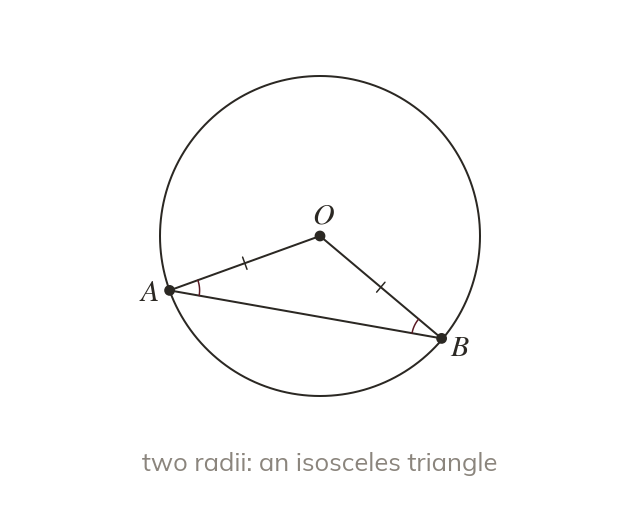

Two radii make an isosceles triangle
Every radius of a circle is the same length. So two radii and a chord make an isosceles triangle. Its base angles are equal.
Every radius of a circle is the same length. So any triangle formed by joining the centre to two points on the circumference has two equal sides (both radii), making it isosceles – its base angles, opposite the equal sides, are equal.